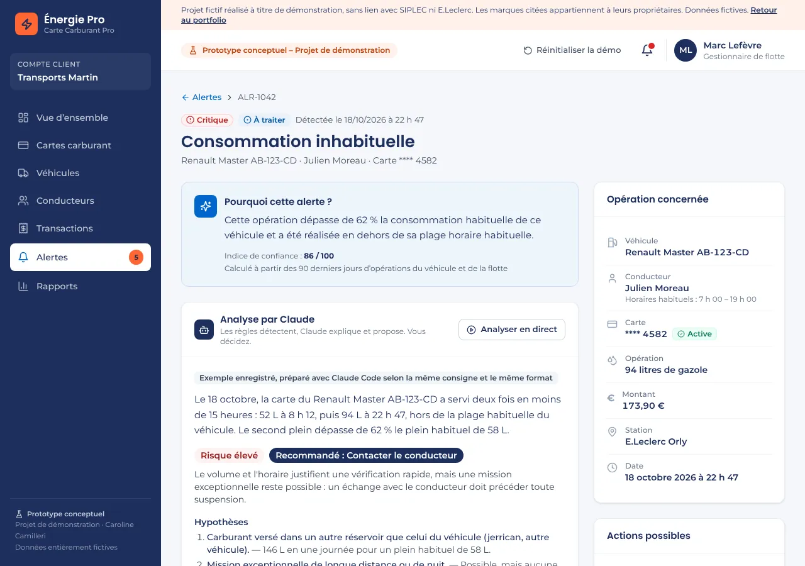

Univers SIPLEC (E.Leclerc) · étude exploratoire
Énergies B2B : gestion de flotte et demande de rendez-vous
Repérer une consommation de carburant anormale et agir sans appeler le support.
- Note de cadrage : écosystème de l'offre, 4 axes d'évolution.
- Prototype : alerte, analyse, suspension de la carte, journal d'activité.
- IA intégrée : Claude explique l'alerte, propose une action et rédige le message au conducteur.
- Page d'offre avec formulaire guidé en 3 étapes.
